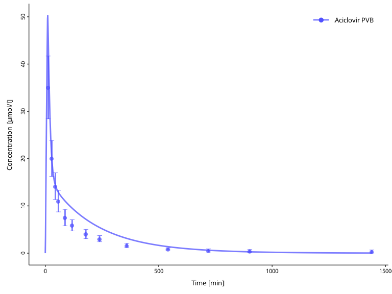
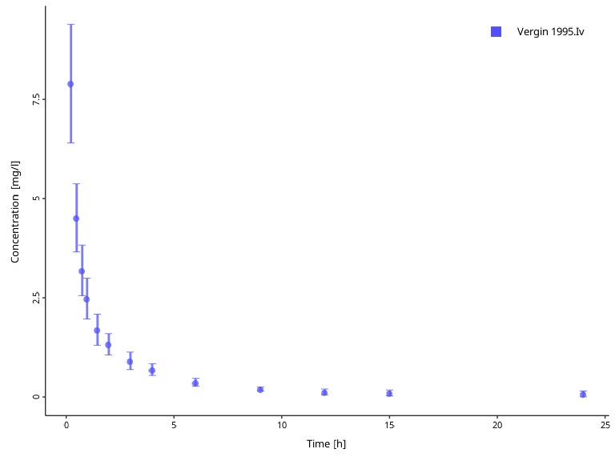
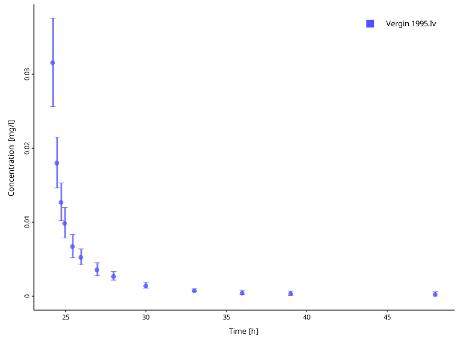

Introduction
In Modeling and Simulation (M&S) workflows, we often need to work with multiple observed and/or simulated datasets. Some of these datasets can be linked together in a group (e.g., the simulated and the corresponding observed data) for analysis and visualization.
The DataCombined class in ospsuite
provides a container to store data, to group them, and to transform them
(e.g. scale or offset). The class accepts data coming from
SimulationResults or as a DataSet object (see
Observed data).
Let’s first generate some simulation results and load observed data.
library(ospsuite)
# Simulation results
simFilePath <- system.file("extdata", "Aciclovir.pkml", package = "ospsuite")
sim <- loadSimulation(simFilePath)
simResults <- runSimulations(sim)[[1]]
outputPath <- "Organism|PeripheralVenousBlood|Aciclovir|Plasma (Peripheral Venous Blood)"
# observed data
obsData <- lapply(
c("ObsDataAciclovir_1.pkml", "ObsDataAciclovir_2.pkml", "ObsDataAciclovir_3.pkml"),
function(x) loadDataSetFromPKML(system.file("extdata", x, package = "ospsuite"))
)
# Name the elements of the list according to the names of the loaded `DataSet`.
names(obsData) <- lapply(obsData, function(x) x$name)Typically, DataCombined is used to create figures using
the plotXXX() functions. The different plot types are
described in Visualizations with
DataCombined. To visualize the different
functionalities of DataCombined in this document, we will
use the plotIndividualTimeProfile() function.
Creating DataCombined object
First, we create a new instance of DataCombined
class.
myDataCombined <- DataCombined$new()Then we add simulated results to this object using
$addSimulationResults():
myDataCombined$addSimulationResults(
simulationResults = simResults,
quantitiesOrPaths = outputPath,
names = "Aciclovir Plasma",
groups = "Aciclovir PVB"
)Next we add observed data to this object using
$addDataSets():
myDataCombined$addDataSets(
obsData$`Vergin 1995.Iv`,
groups = "Aciclovir PVB"
)Every data, be it simulated results or from DataSet,
must have a unique name within DataCombined. If not
specified by user, the path of simulated results or the
$name property of the DataSet are used as the
name. Alternatively, we can define the name when adding the data, as in
the above example adding simulated results.
There are a few things to keep in mind here:
- It doesn’t matter in which order observed or simulated datasets are added.
- You can add multiple
DataSetobjects in$addDataSets()method call. - You can add only a single instance of
SimulationResultsin$addSimulationResults()method call. - If you add a dataset with the same name as existing (e.g., adding simulation results from multiple simulations and not specifying the name, so the path of the results is used as the name), the new data will replace the existing.
Grouping
Since the DataCombined object can store many datasets,
some of them may naturally form a grouping and you would wish to track
this in the object. Both $addDataSets() and
$addSimulationResults() allow group specification via
groups argument.
When being plotted, data sets without a grouping will appear with distinct color, line style (for simulated results), or symbol style (for observed data) with a separate entry in the legend, with the name of the data set being the legend entry.
Though it is possible to group data with different dimensions, it
makes sense to only group data sets that have the same dimension (or
dimensions that can be transformed into each other, like
Amount and Mass) in order to be able to
compare the data. Grouping data sets with different dimensions most
likely will result in an error when trying to create plots or
calculating residuals with such a DataCombined.
Let’s create a DataCombined and add simulation results
and observed data without specifying their grouping and create
a time profile:
myDataCombined <- DataCombined$new()
myDataCombined$addSimulationResults(
simulationResults = simResults,
quantitiesOrPaths = outputPath,
names = "Aciclovir Plasma"
)
myDataCombined$addDataSets(
obsData$`Vergin 1995.Iv`
)
plotIndividualTimeProfile(dataCombined = myDataCombined)If you do not specify groups when you add datasets, and
wish to update groupings later, you can use the
$setGroups() method. All data within one group will get one
entry in the legend with the name of the group, and will be plotted with
the same color.
myDataCombined$setGroups(
names = c("Aciclovir Plasma", obsData$`Vergin 1995.Iv`$name),
groups = c("Aciclovir PVB", "Aciclovir PVB")
)
plotIndividualTimeProfile(dataCombined = myDataCombined)
At any point, you can check the current names and groupings with the following active field:
myDataCombined$groupMap
#> # A tibble: 2 × 3
#> name group dataType
#> <chr> <chr> <chr>
#> 1 Aciclovir Plasma Aciclovir PVB simulated
#> 2 Vergin 1995.Iv Aciclovir PVB observedTransformations
Sometimes the raw data included in DataCombined needs to
be transformed using specified offset and scale factor values.
This is supported via $setDataTransformations() method,
where you can specify the names of datasets, and offsets and scale
factors. If these arguments are scalar (i.e., of length 1), then the
same value will be applied to all specified names. Scale factors are
unitless values by which raw data values will be multiplied, offsets are
added to the raw values without any conversion and must therefore be in
the same units as the raw data.
The internal data frame in DataCombined will be
transformed with the specified parameters, with the new columns computed
as:
- For x values:
newXValue = (rawXValue + xOffset) * xScaleFactor - For y values:
newYValue = (rawYValue + yOffset) * yScaleFactor - For arithmetic error:
newErrorValue = rawErrorValue * abs(yScaleFactor) - For geometric error: no transformation.
At any point, you can check the applied offsets and scale factors with the following active field:
myDataCombined$dataTransformations
#> # A tibble: 2 × 5
#> name xOffsets yOffsets xScaleFactors yScaleFactors
#> <chr> <dbl> <dbl> <dbl> <dbl>
#> 1 Aciclovir Plasma 0 0 1 1
#> 2 Vergin 1995.Iv 0 0 1 1Now lets take a closer look on possible situations where you would apply any transformations. Consider the observed data from the examples above. It reports concentrations of aciclovir after single intravenous administration.
myDataCombinedTranformations <- DataCombined$new()
myDataCombinedTranformations$addDataSets(
obsData$`Vergin 1995.Iv`
)
plotIndividualTimeProfile(dataCombined = myDataCombinedTranformations)
However, we might want to use this data set with a simulation where aciclovir is administered 24 hours after simulation begin. To be able to compare simulation results with the data set, we can offset the observed data time by 24 hours. Keep in mind that the offset must be given in the same unit as the data set values are.
# Check the units of the observed time values
obsData$`Vergin 1995.Iv`$xUnit
#> [1] "h"
myDataCombinedTranformations$setDataTransformations(
forNames = obsData$`Vergin 1995.Iv`$name,
xOffsets = 24
)
plotIndividualTimeProfile(dataCombined = myDataCombinedTranformations)
In the next step, we want to normalize observed
concentrations to a dose. We can easily achieve this with the scale
factor. In the next example, we normalize observed values to 250 mg dose
by setting the yScaleFactor to 1/250:
myDataCombinedTranformations$setDataTransformations(
forNames = obsData$`Vergin 1995.Iv`$name,
yScaleFactors = 1 / 250
)
plotIndividualTimeProfile(dataCombined = myDataCombinedTranformations) Finally, offsetting the observation values might be useful when working with measurements of endogenous substrates, such as the hormone glucagon, and want to correct for the individual specific baseline levels of the hormone.
Extracting a combined data frame
The data frame (also sometimes called as a table) data structure is central to R-based workflows, and, thus, we may wish to extract a data frame for datasets present in the object.
Internally, DataCombined extracts data frames for
observed and simulated datasets and combines them.
myDataCombined$toDataFrame()
#> # A tibble: 504 × 27
#> IndividualId xValues name yValues xDimension xUnit yDimension yUnit
#> <int> <dbl> <chr> <dbl> <chr> <chr> <chr> <chr>
#> 1 0 0 Aciclovir Pla… 0 Time min Concentra… µmol…
#> 2 0 1 Aciclovir Pla… 3.25 Time min Concentra… µmol…
#> 3 0 2 Aciclovir Pla… 9.10 Time min Concentra… µmol…
#> 4 0 3 Aciclovir Pla… 15.0 Time min Concentra… µmol…
#> 5 0 4 Aciclovir Pla… 20.7 Time min Concentra… µmol…
#> 6 0 5 Aciclovir Pla… 26.2 Time min Concentra… µmol…
#> 7 0 6 Aciclovir Pla… 31.4 Time min Concentra… µmol…
#> 8 0 7 Aciclovir Pla… 36.4 Time min Concentra… µmol…
#> 9 0 8 Aciclovir Pla… 41.1 Time min Concentra… µmol…
#> 10 0 9 Aciclovir Pla… 45.5 Time min Concentra… µmol…
#> # ℹ 494 more rows
#> # ℹ 19 more variables: molWeight <dbl>, dataType <chr>, yErrorValues <dbl>,
#> # yErrorType <chr>, yErrorUnit <chr>, lloq <dbl>, Source <chr>, File <chr>,
#> # Sheet <chr>, Molecule <chr>, Species <chr>, Organ <chr>, Compartment <chr>,
#> # `Study Id` <chr>, Gender <chr>, Dose <chr>, Route <chr>,
#> # `Patient Id` <chr>, group <chr>This function returns a tibble data frame. If you wish to modify how it is printed, you can have a look at the available options here. In fact, let’s change a few options and print the data frame again.
options(
pillar.width = Inf, # show all columns
pillar.min_chars = Inf # to turn off truncation of column titles
)
myDataCombined$toDataFrame()#> # A tibble: 504 × 27
#> IndividualId xValues name yValues xDimension xUnit
#> <int> <dbl> <chr> <dbl> <chr> <chr>
#> 1 0 0 Aciclovir Plasma 0 Time min
#> 2 0 1 Aciclovir Plasma 3.25 Time min
#> 3 0 2 Aciclovir Plasma 9.10 Time min
#> 4 0 3 Aciclovir Plasma 15.0 Time min
#> 5 0 4 Aciclovir Plasma 20.7 Time min
#> 6 0 5 Aciclovir Plasma 26.2 Time min
#> 7 0 6 Aciclovir Plasma 31.4 Time min
#> 8 0 7 Aciclovir Plasma 36.4 Time min
#> 9 0 8 Aciclovir Plasma 41.1 Time min
#> 10 0 9 Aciclovir Plasma 45.5 Time min
#> yDimension yUnit molWeight dataType yErrorValues yErrorType
#> <chr> <chr> <dbl> <chr> <dbl> <chr>
#> 1 Concentration (molar) µmol/l 225. simulated NA NA
#> 2 Concentration (molar) µmol/l 225. simulated NA NA
#> 3 Concentration (molar) µmol/l 225. simulated NA NA
#> 4 Concentration (molar) µmol/l 225. simulated NA NA
#> 5 Concentration (molar) µmol/l 225. simulated NA NA
#> 6 Concentration (molar) µmol/l 225. simulated NA NA
#> 7 Concentration (molar) µmol/l 225. simulated NA NA
#> 8 Concentration (molar) µmol/l 225. simulated NA NA
#> 9 Concentration (molar) µmol/l 225. simulated NA NA
#> 10 Concentration (molar) µmol/l 225. simulated NA NA
#> yErrorUnit lloq Source File Sheet Molecule Species Organ Compartment
#> <chr> <dbl> <chr> <chr> <chr> <chr> <chr> <chr> <chr>
#> 1 NA NA NA NA NA NA NA NA NA
#> 2 NA NA NA NA NA NA NA NA NA
#> 3 NA NA NA NA NA NA NA NA NA
#> 4 NA NA NA NA NA NA NA NA NA
#> 5 NA NA NA NA NA NA NA NA NA
#> 6 NA NA NA NA NA NA NA NA NA
#> 7 NA NA NA NA NA NA NA NA NA
#> 8 NA NA NA NA NA NA NA NA NA
#> 9 NA NA NA NA NA NA NA NA NA
#> 10 NA NA NA NA NA NA NA NA NA
#> `Study Id` Gender Dose Route `Patient Id` group
#> <chr> <chr> <chr> <chr> <chr> <chr>
#> 1 NA NA NA NA NA Aciclovir PVB
#> 2 NA NA NA NA NA Aciclovir PVB
#> 3 NA NA NA NA NA Aciclovir PVB
#> 4 NA NA NA NA NA Aciclovir PVB
#> 5 NA NA NA NA NA Aciclovir PVB
#> 6 NA NA NA NA NA Aciclovir PVB
#> 7 NA NA NA NA NA Aciclovir PVB
#> 8 NA NA NA NA NA Aciclovir PVB
#> 9 NA NA NA NA NA Aciclovir PVB
#> 10 NA NA NA NA NA Aciclovir PVB
#> # ℹ 494 more rowsospsuite also provides a few helper functions to modify the data frame further.
When multiple (observed and/or simulated) datasets are present in a
data frame, they are likely to have different units.
convertUnits() function helps to convert them to a common
unit. The function will not modify the DataCombined object
but return a new data frame with unified units.1.
convertUnits(
myDataCombined,
xUnit = ospUnits$Time$s,
yUnit = ospUnits$`Concentration [mass]`$`µg/l`
)
#> # A tibble: 504 × 27
#> IndividualId xValues name yValues xDimension xUnit yDimension yUnit
#> <int> <dbl> <chr> <dbl> <chr> <chr> <chr> <chr>
#> 1 0 0 Aciclovir Pla… 0 Time s Concentra… µg/l
#> 2 0 60 Aciclovir Pla… 733. Time s Concentra… µg/l
#> 3 0 120 Aciclovir Pla… 2050. Time s Concentra… µg/l
#> 4 0 180 Aciclovir Pla… 3382. Time s Concentra… µg/l
#> 5 0 240 Aciclovir Pla… 4668. Time s Concentra… µg/l
#> 6 0 300 Aciclovir Pla… 5901. Time s Concentra… µg/l
#> 7 0 360 Aciclovir Pla… 7077. Time s Concentra… µg/l
#> 8 0 420 Aciclovir Pla… 8194. Time s Concentra… µg/l
#> 9 0 480 Aciclovir Pla… 9249. Time s Concentra… µg/l
#> 10 0 540 Aciclovir Pla… 10242. Time s Concentra… µg/l
#> # ℹ 494 more rows
#> # ℹ 19 more variables: molWeight <dbl>, dataType <chr>, yErrorValues <dbl>,
#> # yErrorType <chr>, yErrorUnit <chr>, lloq <dbl>, Source <chr>, File <chr>,
#> # Sheet <chr>, Molecule <chr>, Species <chr>, Organ <chr>, Compartment <chr>,
#> # `Study Id` <chr>, Gender <chr>, Dose <chr>, Route <chr>,
#> # `Patient Id` <chr>, group <chr>Further functionalities
Grouping of simulated results with observed data inside
DataCombined also allows to calculate the error between
simulated results and observations using the
calculateResiduals() function. The function calculates the
distance between each observed data point within the group and the
simulated results. Simulation results interpolated if no simulated value
is available for a certain observed time point. Observed data beyond
simulated time is ignored, i.e., no extrapolation is
performed.
There are two ways to calculate the distance (residuals) - linear and
logarithmic - specified by the scaling argument. For linear
scaling (scaling = tlf::Scaling$lin):
Residuals are calculated as: Simulation value - Observed value. This means that the residuals are defined by absolute differences.
For logarithmic scaling
(scaling = tlf::Scaling$log):
Residuals are calculated as: log(Simulation value) - log(Observed value) = log (Simulation Value / Observed Value). This means that the ratio of values is considered which is independent of the magnitude of the value. But for very small observed values, in particular close to 0 values, this can lead to problems, because log(10E-N) = -N can becomes large.
# Linear residuals
calculateResiduals(myDataCombined, scaling = tlf::Scaling$lin)$residualValues
#> [1] 9.49304275 -0.14538952 0.17965548 1.84599976 3.52552442 3.64160094
#> [7] 3.15654735 2.38392729 1.48703530 0.50532597 0.08009793 -0.14892803
#> [13] -0.29395086
# Logarithmic residuals
calculateResiduals(myDataCombined, scaling = tlf::Scaling$log)$residualValues
#> [1] 0.239719620 -0.007286928 0.012618336 0.155242835 0.384912455
#> [6] 0.482210178 0.578799737 0.577914238 0.647582143 0.457679775
#> [11] 0.137321647 -0.418715711 -2.305882655To quickly calculate the total error of the
DataCombined, one can sum up the absolute values of the
residuals:
# Linear residuals
totalError <- sum(abs(calculateResiduals(myDataCombined, scaling = tlf::Scaling$lin)$residualValues))
print(totalError)
#> [1] 26.88703Visualizations with DataCombined
See Visualizations with
DataCombined describing functions that can visualize
data stored in DataCombined object.